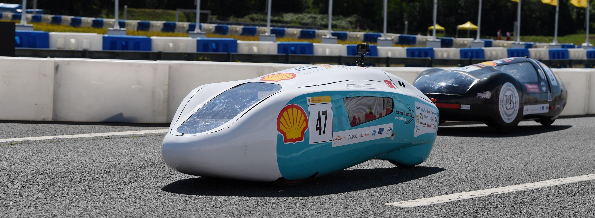
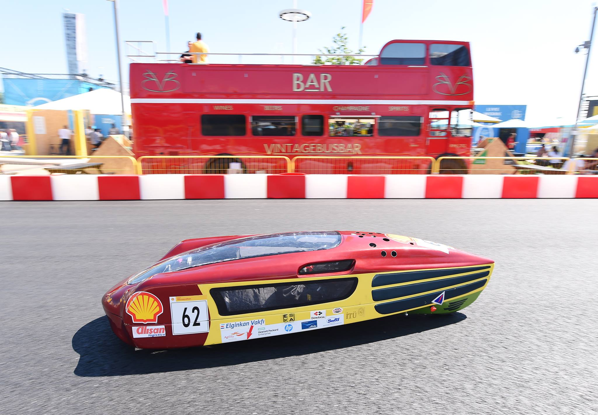

Scope
The work covered steering system design, transmission decisions, carbon fiber body and monocoque studies, test systems, ECU calibration, and integration with team-level vehicle efficiency targets.
Technical Work
The project included vehicle road-load modeling, race strategy simulation in Simulink, 3D-printed parts, dynamometer-related test planning, and fuel consumption optimization through engine mapping and calibration.
Graduation Project Summary
The Turkish graduation design project, titled Development of a Dynamic Model and Road Simulation for Gasoline Lightweight Vehicles, documents the engineering work behind a gasoline-powered Shell Eco-marathon vehicle. It covers steering geometry, carbon fiber body design and production, dynamometer design, vehicle dynamics modeling, road simulation, ECU selection, and engine calibration. The study connects mechanical design decisions with simulation and testing so the vehicle could be evaluated against efficiency-focused race conditions.
Project Media
